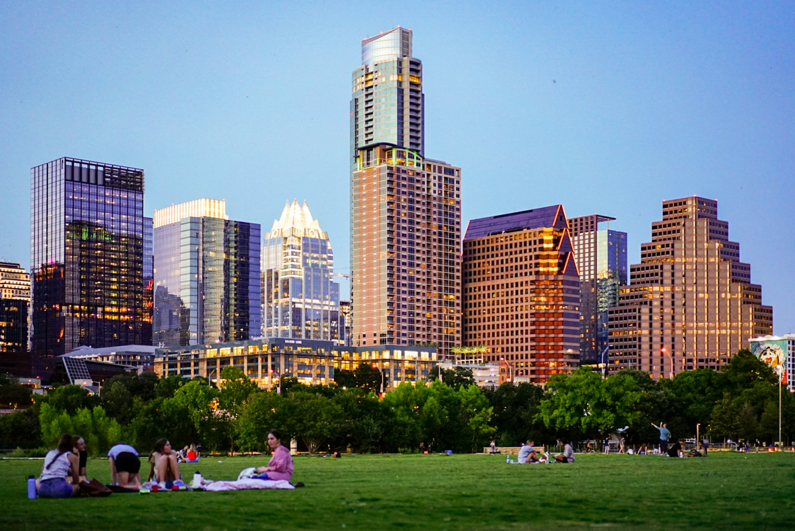
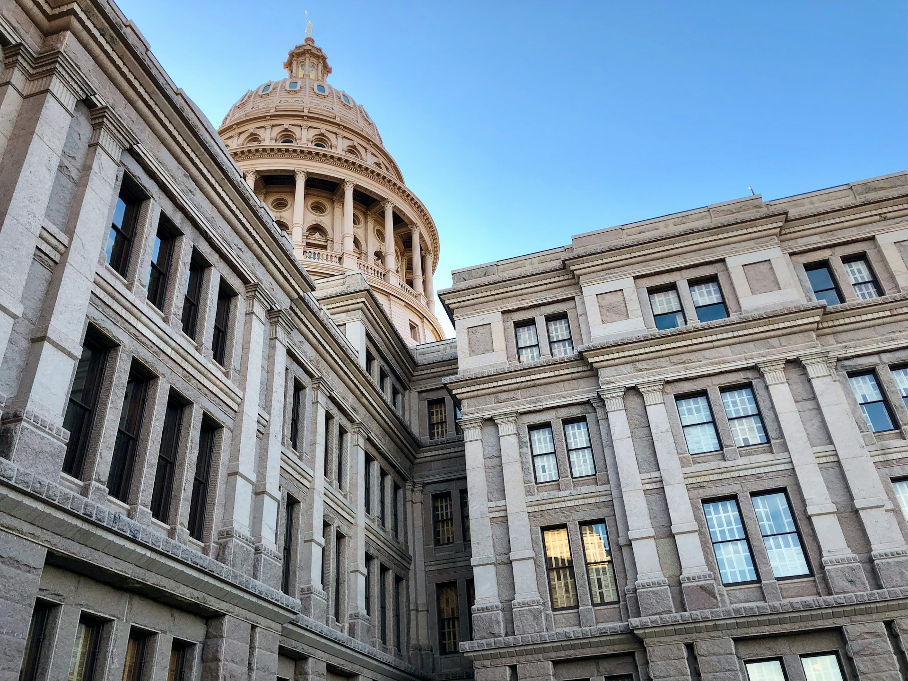

Attractions in Austin
Zilker Park
Photo by Megan Bucknall on Unsplash
The Zilker park is a 350 acres park located in south Austin. It's named after its backer, Andrew Jackson Zilker who donated the land to the city in 1917. The land was turned into a park during the great depression in the 1930s
The Texas State Capitol
Photo by Clark Van Der Beken on Unsplash
The Texas state capitol is the seat of government in Texas. In 1881 the Texas state capitol was designed by the architect Elijah E. Myers, construction was started later in 1882 and finished in 1888.
The Blanton Museum of Art

Photo by Mimi Di Cianni on Unsplash
Spanning over 189 000 square feet (17 500 square meters) this makes it one of largest university museums in the entirety of the U.S. The Blanton's permanent collection includes 21 000 pieces of art.